Il Mannarino
Il gusto dalla parte del manico: un’osteria che parla come una bottega di quartiere, dal banco alla tavola fino alla strada.
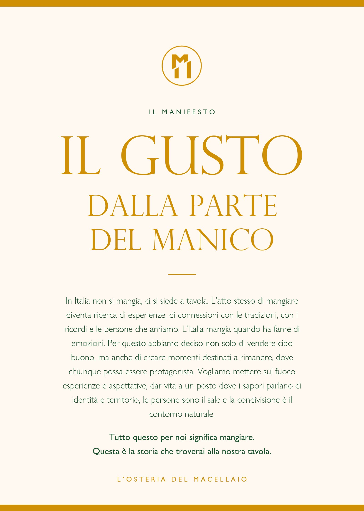
01 — Il sistema
Un monogramma, due colori guida, sei texture. Tutto quello che serve per riconoscere Il Mannarino, ovunque.
L’identità in una tavola
A Colore
Verde bottega#1B5631
Ocra#D09005
Terra#6F6158
Tabacco#322D20
Salvia#67813B
Crema#F5DEA2
Bianco#FFFFFF
B Texture
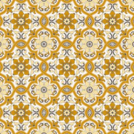
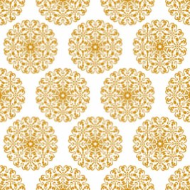
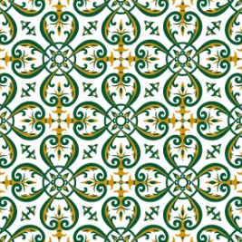
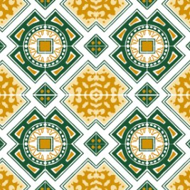
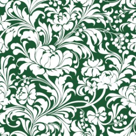
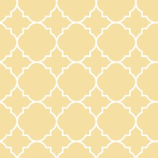
C Dove vive il marchio
4
Alla tavola
- Tovagliette in maiolica
- Piatti
- Carta da banco
- Bandierine segnaposto
3
Nello spazio
- Insegna
- Manifesto in sala
- Piatti a parete
2
Con le persone
- Grembiuli
- Campagna «Macellai di quartiere»
02 — Alla tavola
Il marchio si mangia con gli occhi: la carta da banco firmata, le cementine sotto il piatto, il monogramma sul bordo.
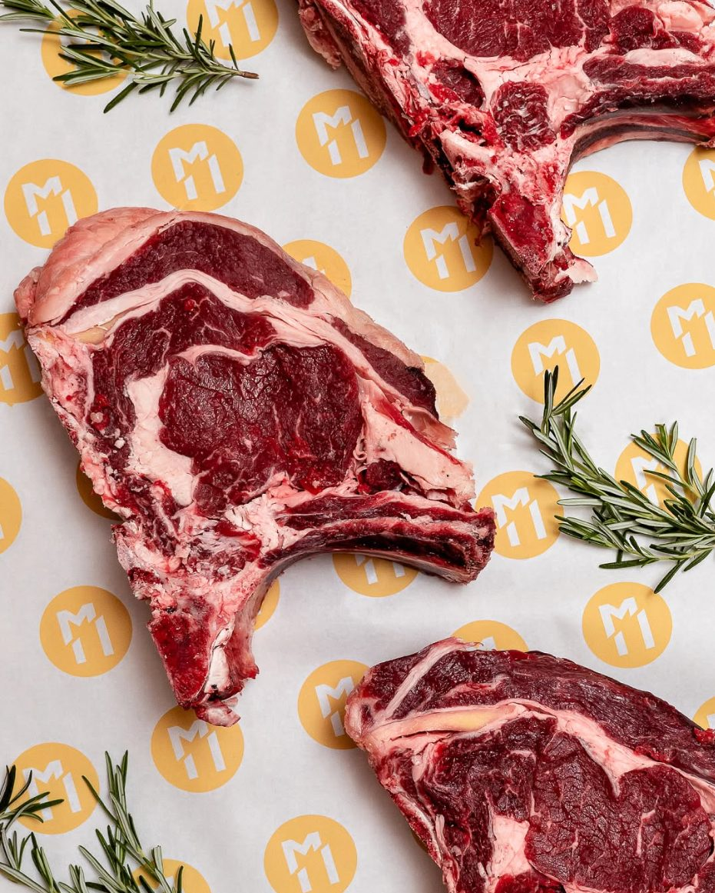
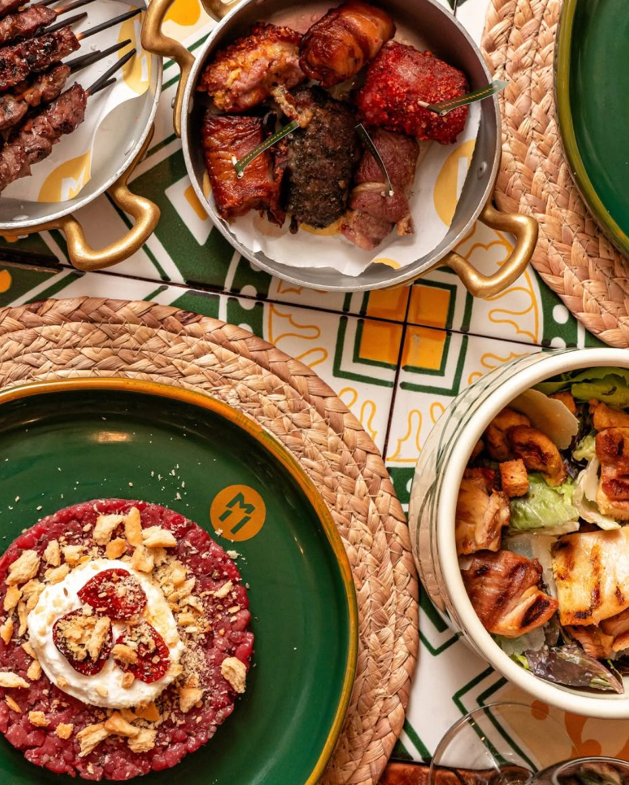
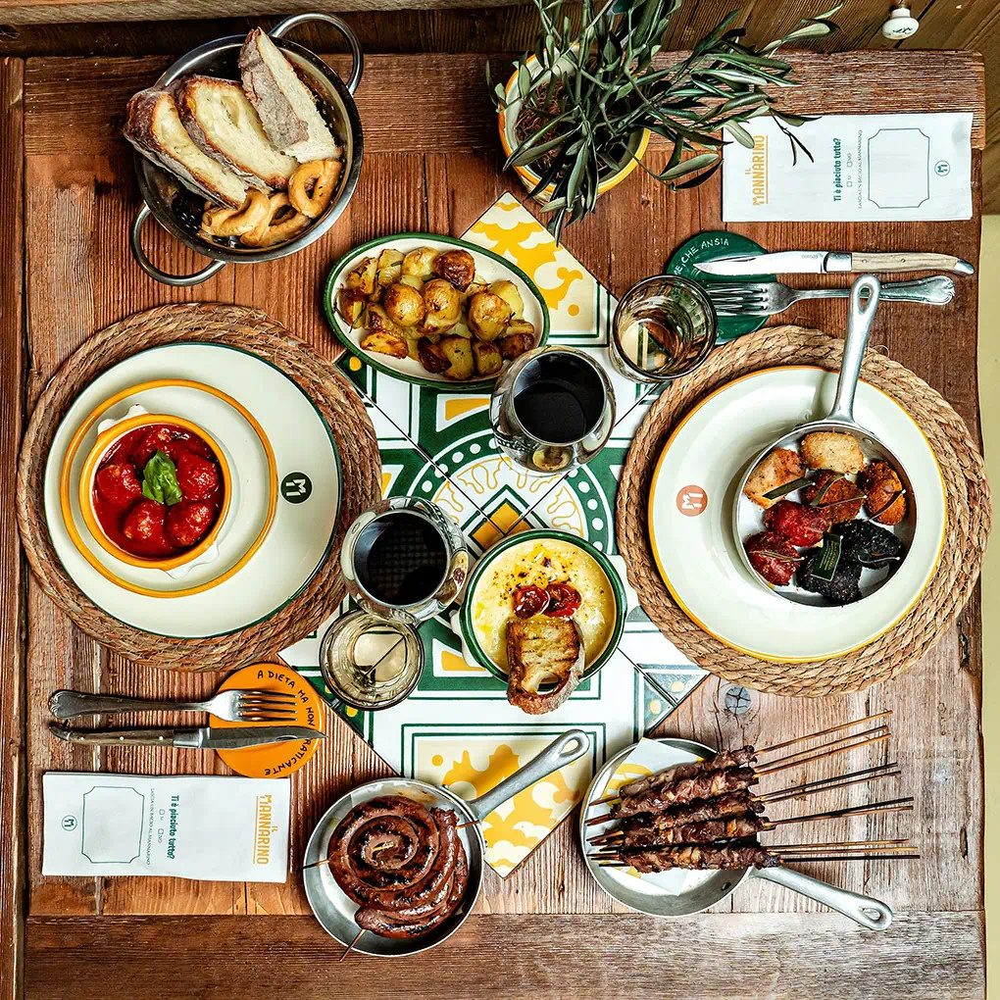
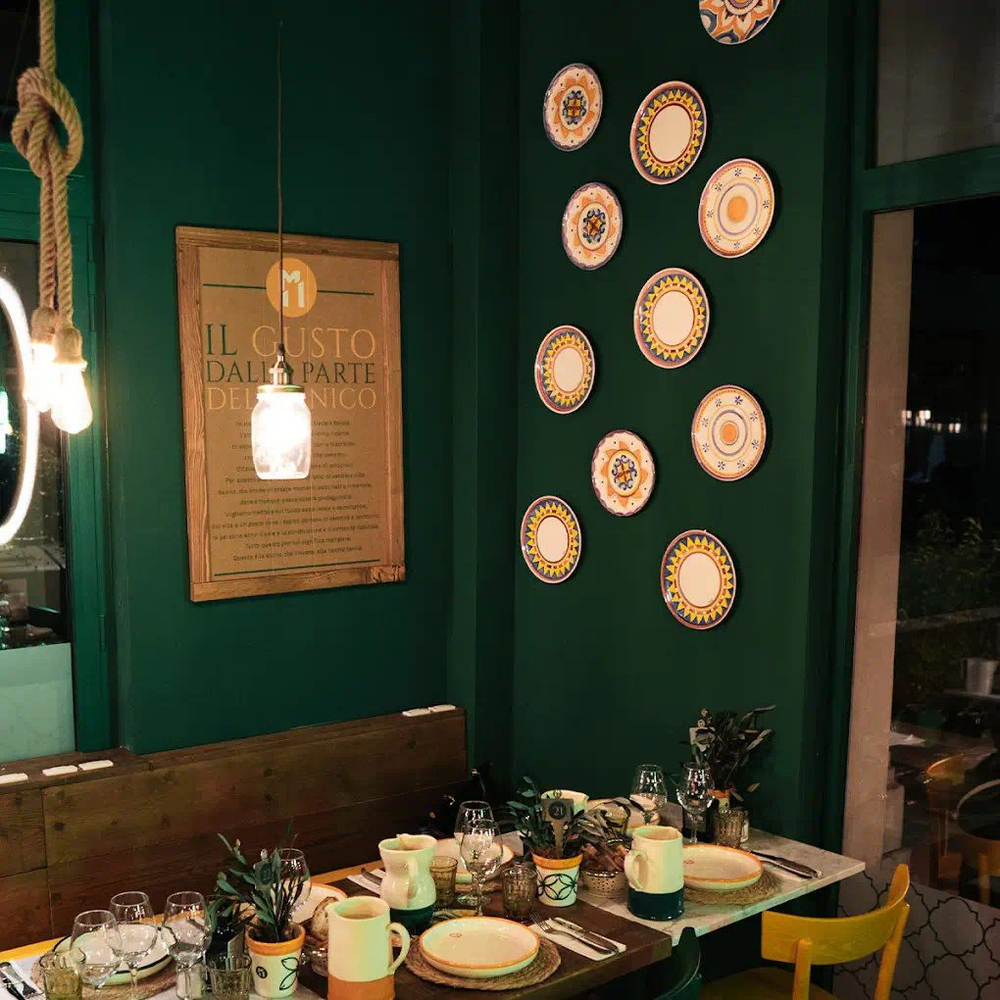
03 — Macellai di quartiere
Una campagna di ritratti in bianco e nero: chi lavora al banco racconta il mestiere in prima persona.
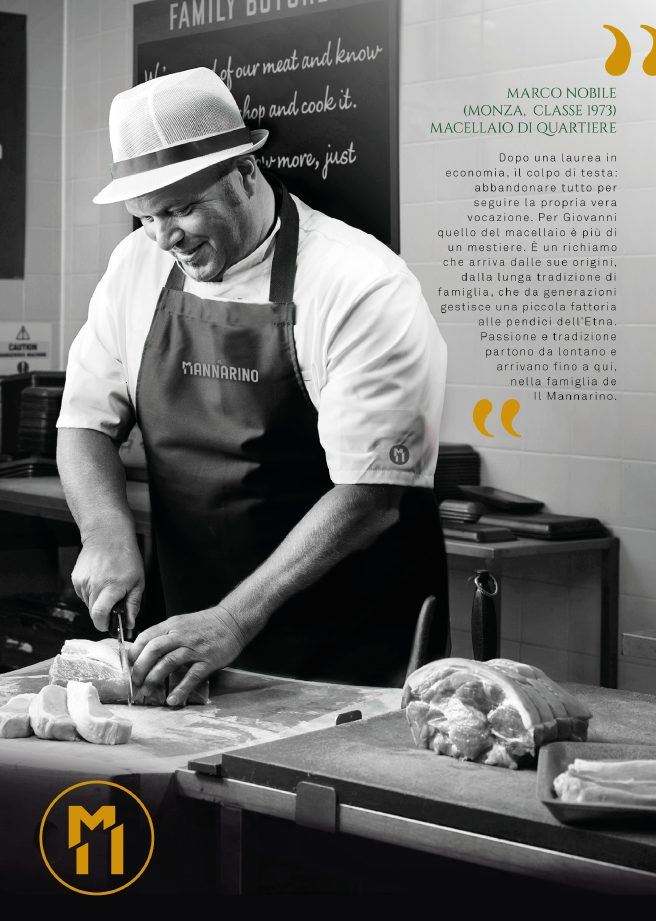
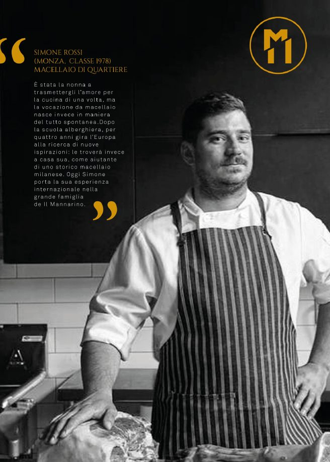
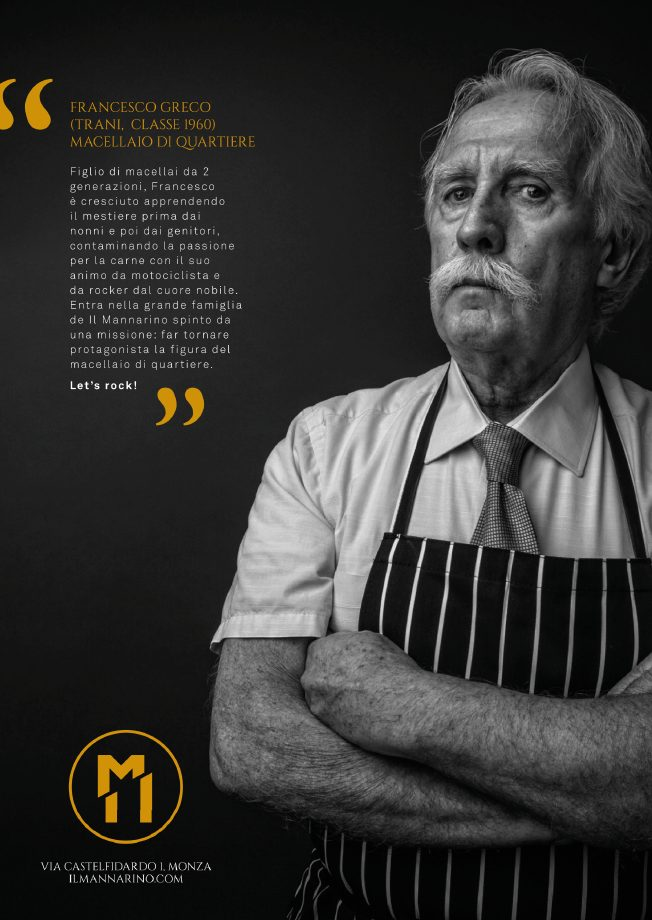
04 — Fino alla strada
Dall’insegna alle bandierine nel cartoccio, lo stesso verde accompagna il cliente dentro e fuori dal locale.
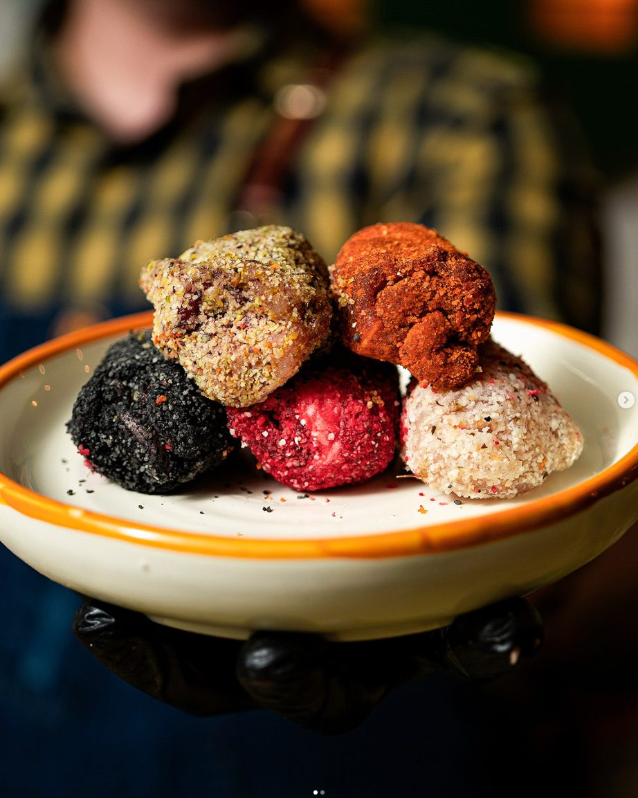
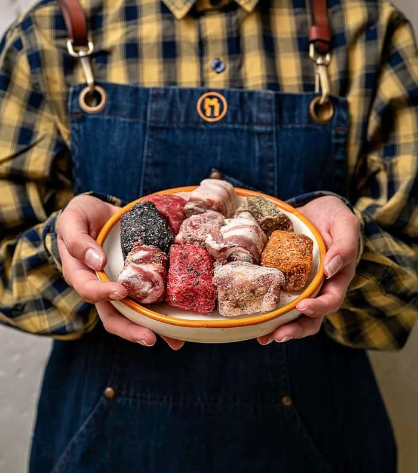
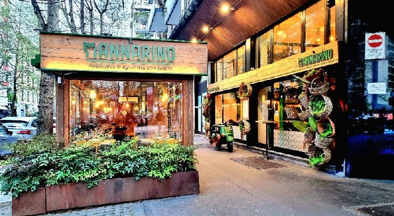
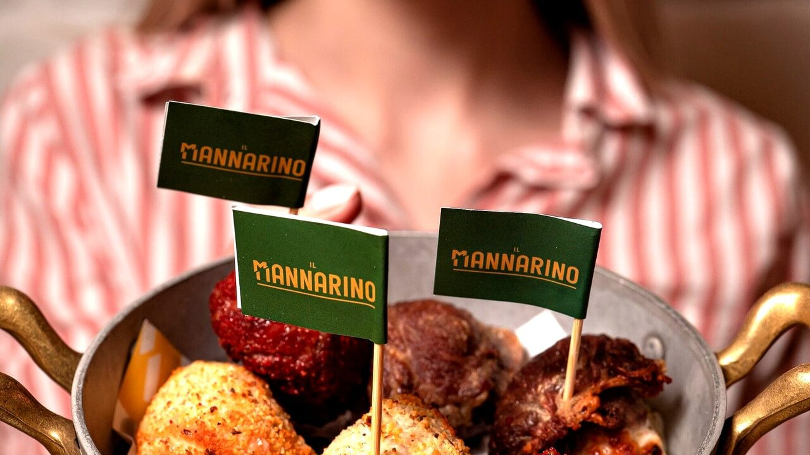